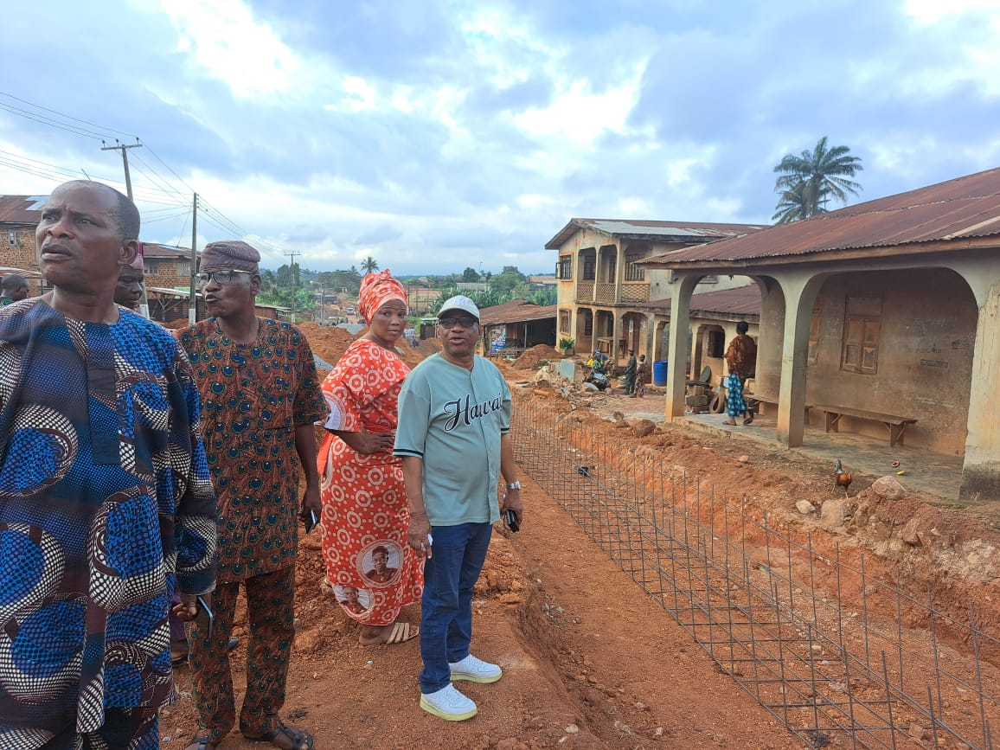
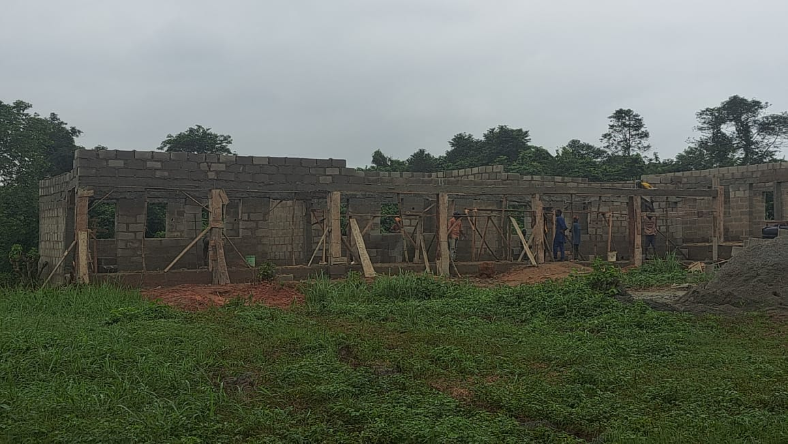
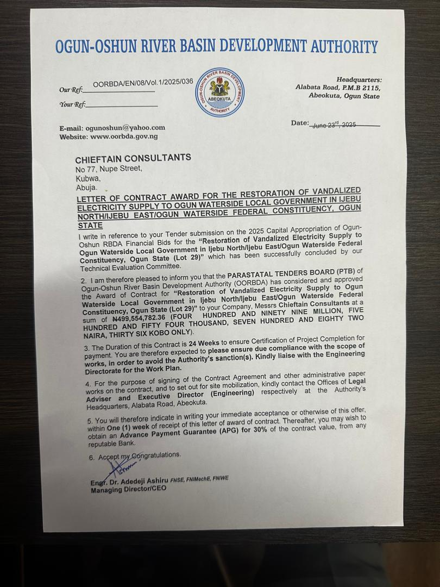
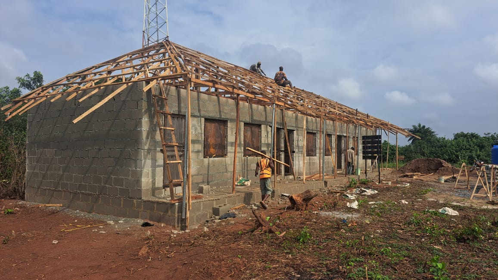

Category 1: Completed & Annual Projects


Direct Supervision
Construction of Internal Molusi College Road, Ijebu Igbo
Complete construction of internal road network within Molusi College, improving accessibility and safety for students and staff.
Ijebu Igbo
Personally Funded
Direct Supervision


Direct Supervision
Construction of 20 Lock-up Shops at Atikori Market, Ijebu Igbo
Development of commercial infrastructure to boost local trade and provide business opportunities for market traders.
Atikori Market
Personally Funded
Direct Supervision

Direct Supervision
Resuscitation of SSCE Center & Annual NECO/GCE Sponsorship
Revival of the only SSCE (Private) Center in Ogun Waterside LGA with ongoing sponsorship of 100 students for NECO/GCE examinations since 2022.
Ogun Waterside LGA
Ongoing Since 2022
100 Students

Direct Supervision
Payment of WAEC and NECO Fees for 150 Students
Comprehensive financial support for 150 students across Ijebu North and Ijebu East Local Government Areas to ensure access to quality education.
Ijebu North & East
150 Students
Direct Supervision

Direct Supervision
Renovation of Ojowo and Agunboye Primary Health Centre
Complete renovation of two primary health centres in Ijebu Igbo to improve healthcare delivery and patient comfort.
Ijebu Igbo
2 Centres
Direct Supervision

Direct Supervision
Construction of 3-Classroom Block in Adegorunshen, Ward 11
Modern classroom facility in Ago Iwoye to enhance learning environment and accommodate more students in the community.
Ago Iwoye
3 Classrooms
Direct Supervision

Direct Supervision
Construction of 6-Classroom Block in Obanta Comprehensive High School
Major expansion of Obanta Comprehensive High School in Awa Ijebu with six modern classrooms to improve educational capacity.
Awa Ijebu
6 Classrooms
Direct Supervision

Direct Supervision
Construction of 2-Classroom, Office & Store in Ajebo Moslem Primary School
Complete educational facility in Oru Ijebu including classrooms, administrative office, and storage facilities for school operations.
Oru Ijebu
2 Classrooms + Office
Direct Supervision

Direct Supervision
Donation of Borehole to Police Area Command, Ijebu Igbo
Provision of clean water supply to Police Area Command in Ijebu Igbo to support security personnel and improve facility operations.
Ijebu Igbo
Personally Funded
Direct Supervision

Direct Supervision
Provision of New Tractor to Egbe Agbe Parapò (Ijebu Igbo Chapter)
Modern agricultural equipment donation to support local farmers and improve agricultural productivity in Ijebu Igbo.
Ijebu Igbo
Delivered
Direct Supervision


Direct Supervision
Cash Support for Rural Road Grading in Ward 4, Ijebu Igbo
Financial support for rural road maintenance and grading to improve accessibility and transportation in Ward 4 communities.
Ward 4, Ijebu Igbo
Completed
Direct Supervision


Direct Supervision
Cash Support for Rural Road Grading in Ijebu East Rural Areas
Comprehensive road maintenance support across rural communities in Ijebu East to enhance connectivity and economic activities.
Ijebu East Rural Areas
Completed
Direct Supervision

Direct Supervision
Provision of 200 Solar Street Lights
Installation of 200 solar-powered street lights across the 3 Local Government areas in the Federal Constituency for improved security and visibility.
3 LGAs
200 Lights
Solar Powered


Direct Supervision
Distribution of Palliatives Measures
Comprehensive palliatives distribution to Ijebu North/Ijebu East/Ogun Waterside Federal Constituents via Federal Ministry of Agriculture.
3 LGAs
Distributed
Federal Support
Direct Supervision
Provision and Installation of 33KVA Transformer
Installation of 33KVA transformer at Itamerin Junction to improve electricity supply and power distribution in the area.
Itamerin Junction
33KVA
Direct Supervision

Direct Supervision
Construction of 3-Classroom Block in Imope, Ijebu Igbo
Modern educational facility in Imope community providing quality learning environment for students in Ijebu Igbo.
Imope, Ijebu Igbo
3 Classrooms
Direct Supervision


Direct Supervision
Provision of ₦100,000 Grant to 200 Traders
Financial empowerment support providing ₦100,000 grant to 200 traders across the 3 Local Government areas to boost business growth.
3 LGAs
200 Traders
₦100,000 Each

Direct Supervision
Distribution of 2000 Bags of Fertilizers
Agricultural support program distributing 2000 bags of fertilizers to farmers in Ijebu North, Ijebu East and Ogun Waterside Local Government Areas.
3 LGAs
2000 Bags
Farmers Support


Direct Supervision
Annual Provision of Rice, Beans and Monetary Support
Annual distribution of hundreds of bags of rice and beans with monetary support as palliatives during Christmas, Ileya, and fasting periods across the Federal Constituency.
Federal Constituency
Annual
Ongoing


Direct Supervision
Annual Free Holiday Coaching in Oru/Awa/Ilaporu
Annual free holiday coaching program providing additional educational support to students during school holidays in Oru, Awa, and Ilaporu communities.
Oru/Awa/Ilaporu
Annual
Free Coaching


Direct Supervision
Annual Free Holiday Coaching in Ijebu East Local Government
Dedicated annual free holiday coaching program specifically for students in Ijebu East Local Government Area to enhance academic performance.
Ijebu East LGA
Annual
Free Coaching


Direct Supervision
Care for the Aged Programme
Annual distribution of food items, clothing, and cash support to selected aged men and women in Ijebu North, Ijebu East, and Ogun Waterside Local Government Areas.
3 LGAs
Annual
Elderly Care


Direct Supervision
Scholarship Award to Indigent Students
Scholarship awards to indigent but brilliant students from Ijebu North/Ijebu East/Ogun Waterside Federal Constituency studying at Olabisi Onabanjo University, Ago Iwoye.
3 LGAs
OOU Ago Iwoye
Scholarship


Direct Supervision
Distribution of POS Machine and ₦100,000 Cash Support
Empowerment support providing POS machines and ₦100,000 cash support to selected physically challenged persons in Ijebu Igbo and Ijebu Ife for economic independence.
Ijebu Igbo & Ife
POS + Cash
Physically Challenged


Direct Supervision
Financial Support to God's Will Farmers Association
Financial support and partnership with God's Will Farmers Association, Ijebu Igbo to enhance agricultural development and farmer empowerment in the community.
Ijebu Igbo
Financial Support
Farmers Association
Construction of Itunla–Ajeye Road, Awa Ijebu
Road construction to improve access within Awa Ijebu community.
Construction of Multipurpose Skill Acquisition Centre, Iwopin
Multipurpose center to equip youths and artisans with employable skills.
Construction of Japara Primary Health Centre, Ijebu Igbo
New primary health centre to expand access to basic healthcare services.
Construction of Topon Primary Health Centre, Ijebu Igbo
Additional primary health centre to improve community healthcare coverage.
Construction of Road in front of Olowu of Owu Palace (Phase 1: Drainages)
Phase 1 focuses on stormwater drainage to protect the new carriageway and adjoining properties.
Construction of Abusi Edumare Road, Odosenbadejo, Ojowo, Ijebu Igbo (Phase 1: Drainages)
Phase 1 drainage construction to enable durable roadworks along Abusi Edumare axis.
Odosenbadejo, Ojowo, Ijebu Igbo
Ongoing
Facilitation of Construction of 2.8km Atoyo–Okebu Road
Road facilitation to enhance mobility and market access within Ijebu East LGA.
Facilitation of Construction of 5.41km Owu–Orunwa Road
Strategic corridor to connect rural communities and stimulate economic activities.
Facilitation of Construction of 2.58km Owu–Isomu Road
Feeder road to improve linkages between Owu and Isomu communities.